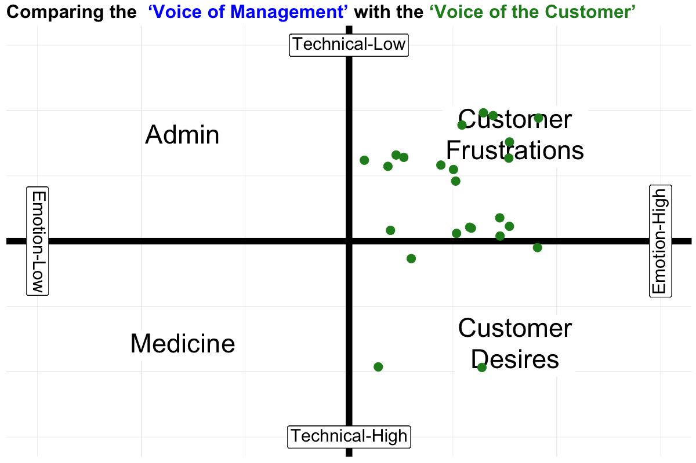
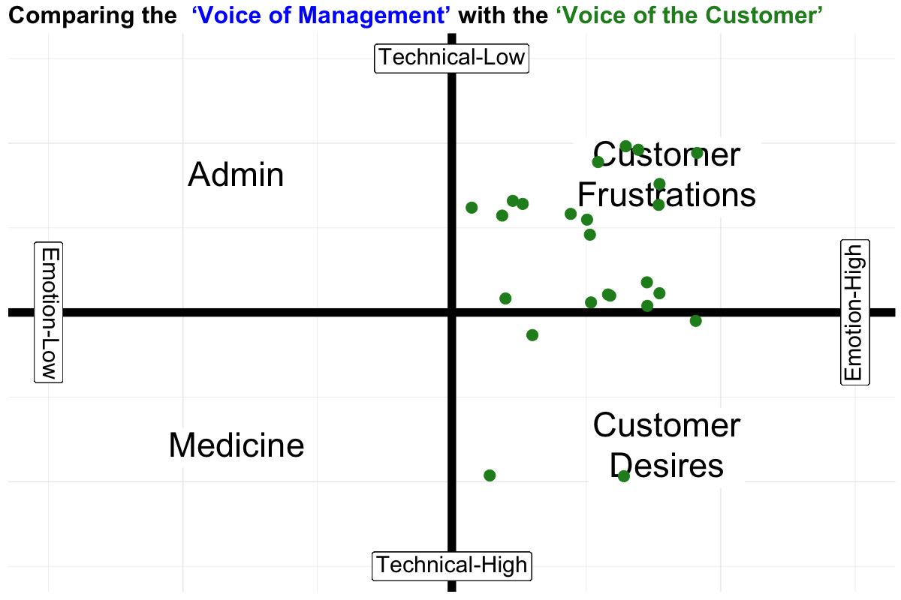

7 Media Calls
 



7.2 FROM TRUE-NORTH SLIDE DECK


Arrow-like characters in Unicode:
Leftwards Arrow: ← ←
Upwards Arrow: ↑ ↑
Rightwards Arrow: → →
Downwards Arrow: ↓ ↓
Diagonal Arrow: ↗ ↗
Diagonal Arrow: ↘ ↘
Bent Arrow: ↪ ↪
Bent Arrow: ↩ ↩RED BOX Example of an .rmdcaution block.
GREEN BOX Example of an .rmdimportant block.
BLUE BOX Example of an .rmdtip block.
BLUEVIOLET BOX Example of an .rmdwarning block.